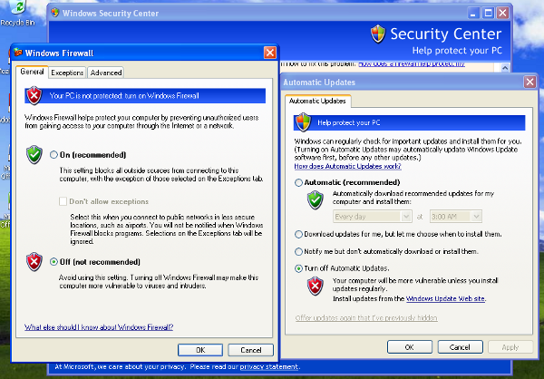
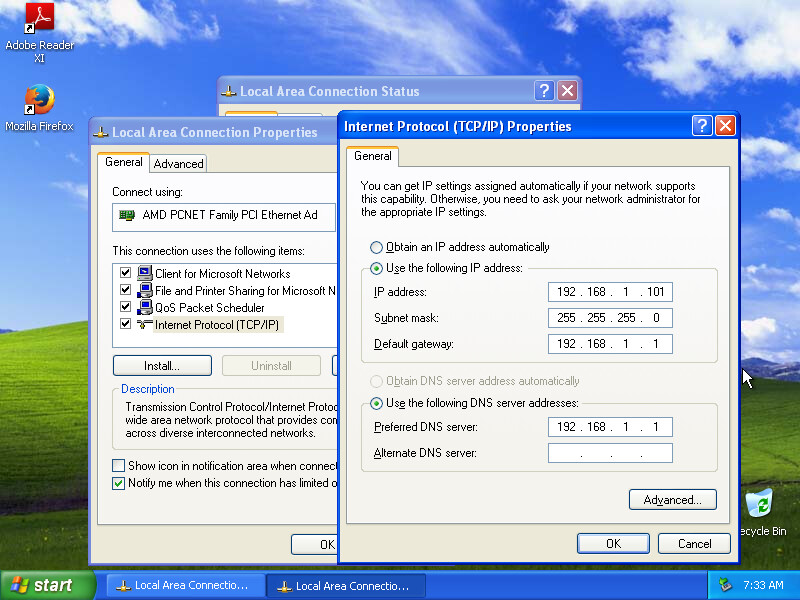

Network Configuration¶
Now it’s time to setup the network for your physical machine.
Windows Settings¶
Before configuring the underlying networking of the sandbox, you might want to tweak some settings inside Windows itself.
One of the most important things to do is disabling Windows Firewall and the Automatic Updates. The reason behind this is that they can affect the behavior of the malware under normal circumstances and that they can pollute the network analysis performed by Cuckoo, by dropping connections or including irrelevant requests.
You can do so from Windows’ Control Panel as shown in the picture:

Using a physical machine manager requires a few more configuration options than the virtual machine managers in order to run properly. In addition to the steps laid out in the regular Preparing the Guest section, some settings need to be changed for physical machines to work properly.
- Enable auto-logon (Allows for the agent to start upon reboot)
- Enable Remote RPC (Allows for Cuckoo to reboot the sandbox using RPC)
- Turn off paging (Optional)
- Disable Screen Saver (Optional)
In Windows 7 the following commands can be entered into an Administrative command prompt to enable auto-logon and Remote RPC.
reg add "hklm\software\Microsoft\Windows NT\CurrentVersion\WinLogon" /v DefaultUserName /d <USERNAME> /t REG_SZ /f
reg add "hklm\software\Microsoft\Windows NT\CurrentVersion\WinLogon" /v DefaultPassword /d <PASSWORD> /t REG_SZ /f
reg add "hklm\software\Microsoft\Windows NT\CurrentVersion\WinLogon" /v AutoAdminLogon /d 1 /t REG_SZ /f
reg add "hklm\system\CurrentControlSet\Control\TerminalServer" /v AllowRemoteRPC /d 0x01 /t REG_DWORD /f
reg add "HKEY_LOCAL_MACHINE\SOFTWARE\Microsoft\Windows\CurrentVersion\Policies\System" /v LocalAccountTokenFilterPolicy /d 0x01 /t REG_DWORD /f
Networking¶
Now you need to decide how to make your physical machine able to access Internet or your local network.
While in previous releases Cuckoo used shared folders to exchange data between the Host and Guests, from release 0.4 it adopts a custom agent that works over the network using a simple XMLRPC protocol.
In order to make it work properly you’ll have to configure your machine’s network so that the Host and the Guest can communicate. Testing the network access by pinging a guest is a good practice, to make sure the virtual network was set up correctly. Use only static IP addresses for your guest, as today Cuckoo doesn’t support DHCP and using it will break your setup.
This stage is very much up to your own requirements and to the characteristics of your virtualization software.
For physical machines, make sure when setting the IP address of the guest to also set the Gateway and DNS server to be the IP address of the cuckoo server on the physical network. For example, if your cuckoo server has the IP address of 192.168.1.1, then you would set the Gateway and DNS server in Windows Settings to be 192.168.1.1 as well.
